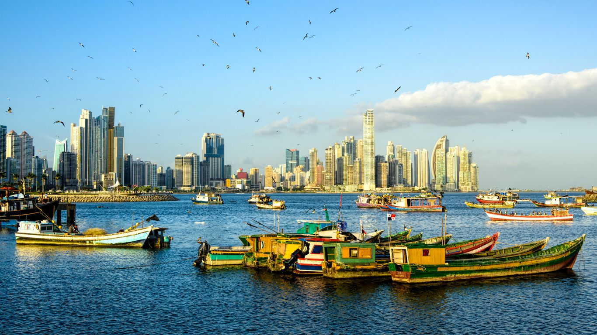

Panamá es un país ubicado en el istmo que une América Central y América del Sur. El Canal de
Panamá, un famoso hito de la ingeniería humana, atraviesa su centro y une los océanos
Atlántico y Pacífico para crear una ruta marítima esencial.

Panamá es un país ubicado en el istmo que une América Central y América del Sur. El Canal de
Panamá, un famoso hito de la ingeniería humana, atraviesa su centro y une los océanos
Atlántico y Pacífico para crear una ruta marítima esencial.
Antes de la llegada de los españoles, el territorio panameño estuvo habitado por diversos
pueblos indígenas. Fue conquistado por España en el siglo XVI y permaneció bajo
su dominio por varios siglos.
Panamá se independizó de España en 1821 y posteriormente formó parte de la Gran Colombia.
Finalmente, logró su independencia definitiva el 3 de noviembre de 1903. El país es
mundialmente conocido por el Canal de Panamá, una de las obras de ingeniería más
importantes del mundo, que ha sido clave para el comercio internacional.
Con 75,517 kilómetros cuadrados, Panamá conecta América Central con América del Sur. Limita
con Costa Rica al oeste y Colombia al este. Tiene costas en el océano Pacífico y el mar
Caribe.